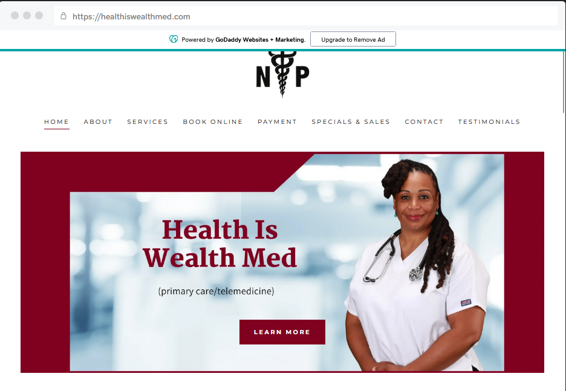
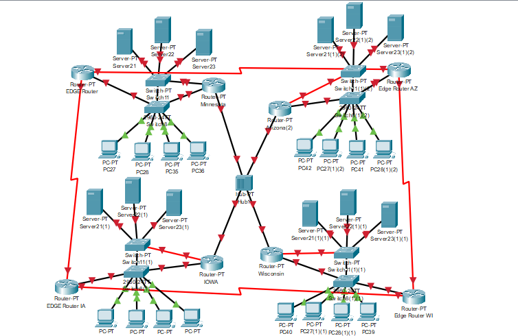
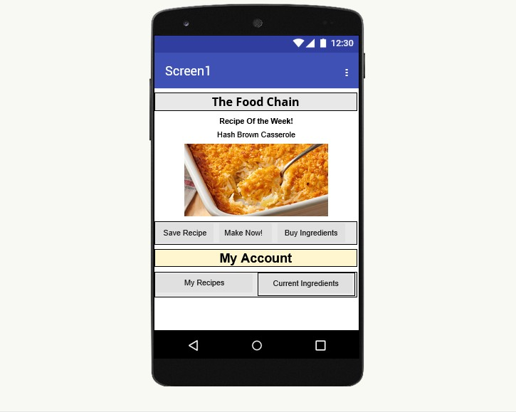

Recent Work

Health is Wealth Medical Internship
Supported an independent practitioner by managing and optimizing workflows within an Electronic Medical Records (EMR) system. Assisted with accurately formatting and maintaining patient records, notifying patients of expired or upcoming appointments, and improving administrative efficiency. Enhanced the practitioner’s website by reorganizing content and improving overall user appeal and accessibility. Streamlined daily operations by reducing unnecessary software bloat, consolidating tools, and implementing more efficient workflow processes to improve productivity and ease of use.

Windows Server, Virtual Machine Project
Configured and partitioned four virtual machines within a Windows Server 2022 environment on a shared physical drive, implementing system hardening techniques to strengthen security across each operating system. Managed centralized network administration using Active Directory by deploying Group Policies, configuring user access controls, and enforcing authentication and authorization policies for devices and users joining the network.

Mayo Health Clinic Project
Collaborated and studied Mayo Health's network operation to make a theoretical healthcare infrastructure

MIT App Inventor Project
Created a mobile cooking app where users could like and share recipes around the world
Also allows beginner cooks to watch tutorial recipes, and store information about how many
ingredients they have in their kitchen